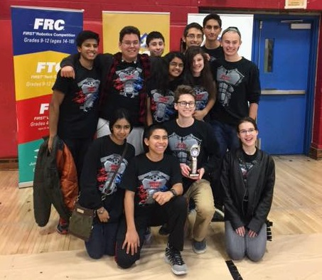

2016-2017 Velocity Vortex Season

Our Mission More About Us
JDroids operates under the motto of "Learn. Do. Share." We learn from our own experiences creating robots and also from engineering and software professionals. And with what we've learned, we do: we pariticipate in FIRST coopertitions and embrace the philosophy of gracious professionalism...
Read More
2016-2017 Team Members
The JDroids consists of 15 highly dedicated members who are all committed to making us the best team that we can be. Each of our members specialize in areas such as design, build, programme, outreach, and logging. We also have 5 very commited mentors who guide our team for success.
Read More
2016-2017 Team Mentors Mentors
Meet our mentors who help run the team, and teach us about what FIRST means.
Read More